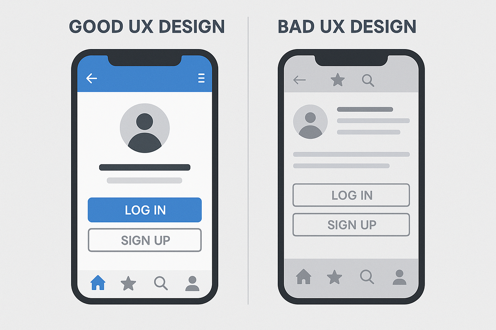

Blogs
Does UI Affect Performance
Author:
Published:
In today's digital world, your website’s user interface can make or break your business success. With everything moving online, the way users interact with your site directly affects your brand. First impressions happen in just a second. During this split second, visitors judge your site’s professionalism, trustworthiness, and ease of use if any element falls short, they’ll leave and likely never return, regardless of how great the product might be. Poor navigation costs companies customers. When users struggle to find what they need, they experience cognitive overload and abandon your site. The statistics are explaining that 88% of consumers won't return after a bad experience, and a one-second delay can reduce conversions by 7%.
| UI Element | Poor Design Impact | Good Design Benefit |
|---|---|---|
| Page Load Speeds | 3+ seconds = 40% bounce rate | Udner 2 seconds = 15% bounce rate |
| Mobile Navigation | Hard to Tap = 65% exit rate | Touch Friendly = 25% exit rate |
| Call-To-Action | Unclear action = 2% conversion | Clear Action = 12% conversion |
Even if you offer life changing products, poor UI creates barriers that prevent discovery. Mobile responsiveness is crucial since over 60% of web traffic comes from mobile devices. Your site must work seamlessly across all screen sizes, from desktop monitors to smartphones. Mobile users need tough friendly buttons, readable text, and fast loading times. The best UI design follows one principle, communicating maximum information with minimum components. This means clear visual hierarchy, intuitive navigation, generous white space, and obvious call to actions. Avoid common mistakes like cluttered homepages, hidden contact information, and confusing forms.
Evolution of Data Analytics in Sports
Author:
Published:
Sports as a whole have transformed with the rise of data analytics. A realm that relied purely on instincts and basic statistics now offers everyday fans insights into every aspect of the game. Modern broadcasts integrate real-time analytics that make watching spots more engaging and informative. Baseball viewers see exit velocity and launch angles on home runs. Basketball fans can track player efficiency ratings and shot charts in real time. Football broadcasts display completion percentages under pressure and yards after contact. Data analytics have helped casual fans gain insights on their favorite teams/players that previously only coaches and analysts recognized. Fantasy sports have increased in popularity during this analytical revolution. Millions of fans now consume advanced statistics weekly, studying player matchups, and injury reports. Creating a more educated audience that demands deeper insights from broadcasters and social media. Predictive analytics are reshaping how individuals anticipate game outcomes. Advanced algorithms consider hundreds of variables, from team chemistry ratings to historical performance in specific weather conditions. Sports betting has exploded partly because fans feel more confident making informed decisions based on data rather than emotions. The result is a richer, more interactive viewing experience where fans engage with sports on analytical and emotional levels, transforming passive watchers into active participants in the game’s strategic elements.